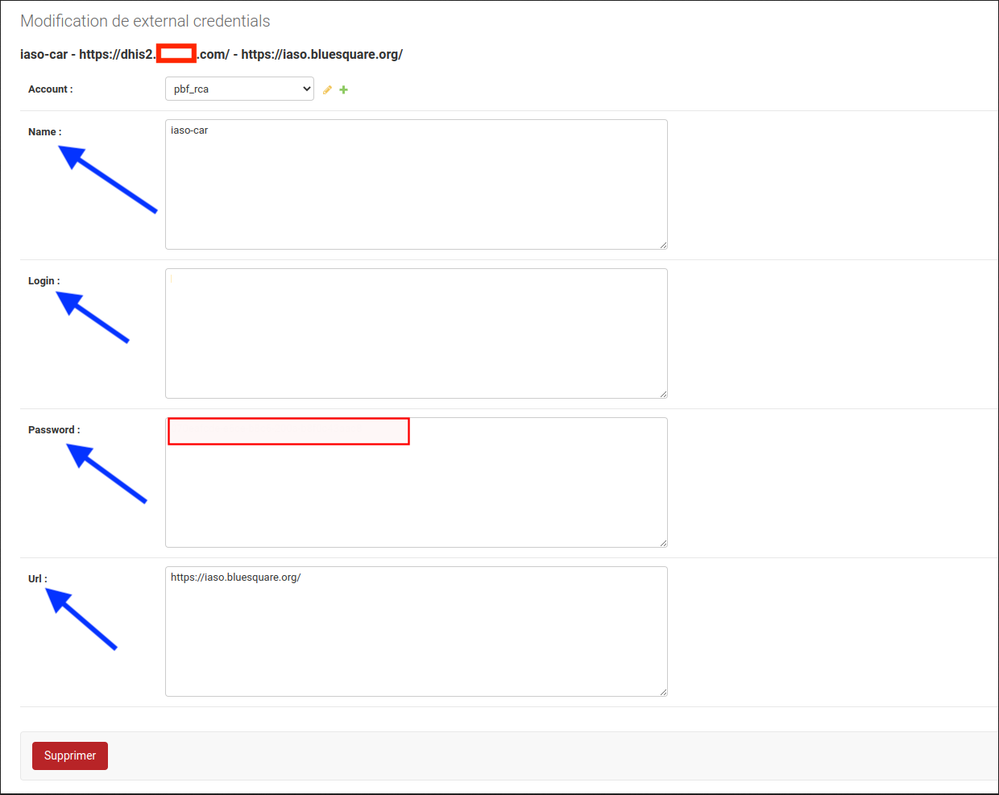
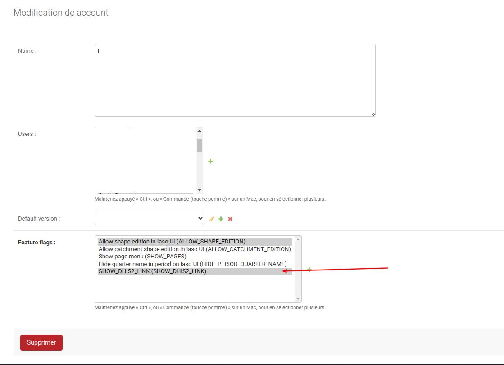
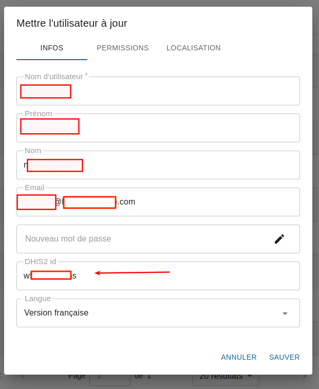

Setup login with dhis2 for iaso#
In DHIS2#
Go in the oauth settings#
in the menu :
System settings > Oauth 2 clients
Parametres Systeme > Oauth 2 clients
Create oauth client#
Name : iaso
Select : authorization code
Url : you need to pick a unique code : https://iaso.bluesquare.org/api/dhis2/<<unique-code>>/login/

In iaso django admin#
Create an external credentials record#
In django admin : https://iaso.bluesquare.org/admin/iaso/externalcredentials/
- Name : oauth client id
- Login: the url of the dhis2
- Password: the oauth client secret
- Url : iaso

Enable the dhis2 link in the iaso menu#
to be able to easily go back to dhis2 add the feature flag "SHOW_DHIS2_LINK" on the Project

then the entry should appear

In iaso#
Link the iaso user with a dhis2 user#
in iaso general ui

Test#
login in dhis2 with the linked in previous step
<<dhis2>>/uaa/oauth/authorize?client_id=<<unique-code>>&response_type=code
then "Authorize": you should end up in iaso
It's not working ?
- Did you put the same code in iaso/dhis2/url to login ?
- The login in iaso external contains the url of the dhis2 ?
- Are you logged in dhis2 with the user you linked the iaso user ?